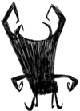

| Nightmare Throne | |
|  "That doesn't look comfortable." |
|
| DebugSpawn | "maxwellthrone" |
| “ | What an intimidating chair. | ” |
| –Wickerbottom | ||
The Nightmare Throne is a structure only found in the epilogue of Adventure Mode. It is a black throne with many spikes, which traps whoever is sitting in it. Attacking it will break the player's weapon and hit the player with a weak Lightning bolt.
Maxwell is found sitting on the throne. If the player chooses to unlock it with a Divining Rod, Maxwell will be released, momentarily stretch, then wither into a skeleton and fade away into dust. Then, two big shadowy hands will come up from the ground and pull the player character underground. The chair will reappear with the character trapped on it, and the Gramaphone next to it will start playing music as the screen fades to black and the story ends.
When players approach Maxwell in the throne, he will say a line. Players have to click on him to read all the lines. Once he says all the lines listed below, excluding the Gramaphone ones, all he will say is "...".
Maxwell sitting on the Nightmare Throne
Wolfgang and Wolfgang
| Naturally spawning world objects | |
| Plants | Berry Bush • Carrot • Cave Banana Tree • Cave Lichen • Flower (Evil Flower, Fern) • Grass • Light Flower • Lureplant • Mandrake • Mushrooms • Mushtree • Plant • Reeds • Sapling • Spiky Bush • Tree • Totally Normal Tree |
| Mobs and Mob Housing | Beehive • Hound Mound • Pond • Pig Fortress • Pig House • Pig King • Pig Torch • Rabbit Hutch • Rundown House • Slurtle Mound • Spider Den • Spilagmite • Splumonkey Pod • Tallbird Nest • Walrus Camp • Worm Hole |
| Inanimate | Ancient Pseudoscience Station • Ancient Statue • Basalt • Boulder • Gramaphone • Grave • Harp Statue • Headstone • Suspicious Dirt Pile • Marble Pillar • Marble Tree • Maxwell's Door • Maxwell Statue • Maxwell's Light • Merm Head • Nightmare Light • Nightmare Lock • Nightmare Throne • Obelisk • Ornate Chest • Pig Head • Pillars • Relic • Sinkhole • Skeleton • Stalagmite • Touch Stone • Thulecite Wall |
| Things | Box Thing • Crank Thing • Eye Bone • Metal Potato Thing • Ring Thing • Wooden Thing |
{kind=link}
{kind=link}